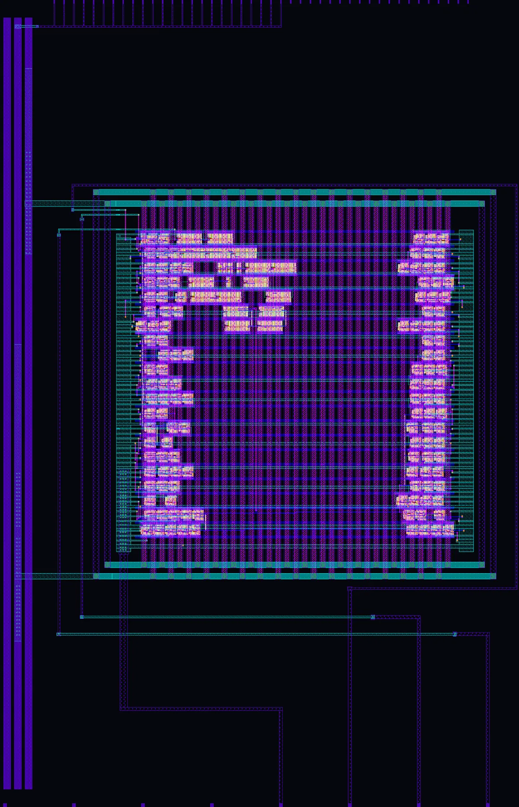
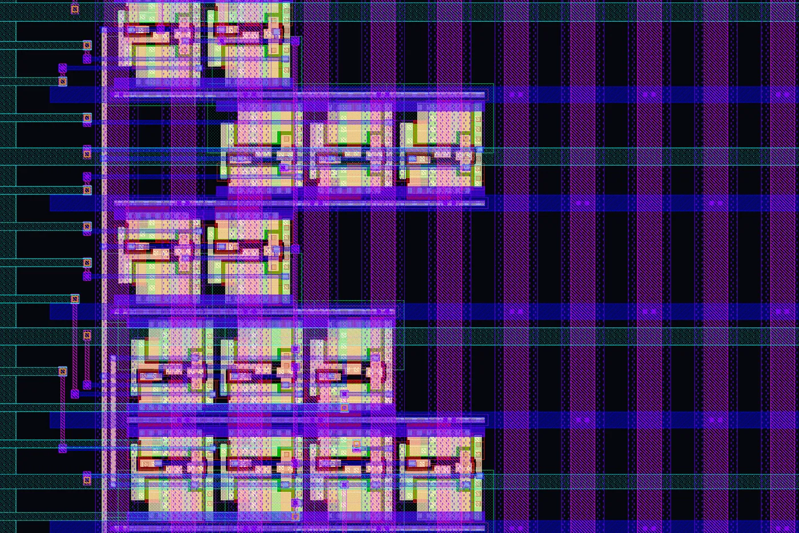

Proyecto de tapeout · Analógico
STDCELL_LDO
Un regulador de voltaje de baja caída, armado con celdas digitales.

Layout completo · KLayout
145.4 × 225.8 µm · 1×2 tiles
SKY130 · 130 nmAlto voltaje · 3.3 VDRC: 0 violaciones
El equipo
Quiénes lo llevaron
hasta el silicio
AP
Diseñador
Abner José
Parra Hernández
Parra Hernández
JV
Supervisor
José Luis Valtierra
Sánchez de la Vega
Sánchez de la Vega
Desarrollado en la Facultad de Ingeniería Mexicali de la UABC, en el programa de Semiconductores y Microelectrónica.
¿Qué es un LDO?
La carga sube;
el voltaje no se mueve
Línea punteada: entrada · línea de color: salida regulada
Carga ligera
El chip consume poco: bastan unos cuantos inversores encendidos.
Carga media
El OTA detecta la caída y enciende más inversores del arreglo.
Carga alta
Casi todo el arreglo conduce, y la salida sigue en su valor.
Animación ilustrativa del principio de operación, no datos de simulación
Anatomía del chip
150 celdas,
un regulador
El bloque completo
145.4 × 225.8 µm: el ancho de unos dos cabellos humanos.
Elemento de paso · izquierda
64 inversores tri-estado einvp_1. Sus salidas se unieron a mano para ensanchar el metal.
Elemento de paso · derecha
Los otros 64. Juntos hacen el trabajo de un solo transistor de potencia.
OTA basado en inversores
El amplificador de error: 16 inv_8 + 6 inv_1. Mide la salida y ajusta el arreglo.
Rieles de alimentación
Las tres líneas verticales que llevan 3.3 V, 1.8 V y tierra.
La idea clave
128 inversores
hacen de transistor

Acercamiento 30 × 20 µm · inversores tri-estado (sky130_fd_sc_hvl__einvp_1)
En vez de un gran transistor dibujado a mano, 128 inversores de la biblioteca de alto voltaje trabajan en paralelo. El layout se generó con OpenROAD y se terminó a mano.
0
inversores en paralelo
0
alto voltaje
0
violaciones DRC
Ficha técnica
STDCELL_LDO en datos
| Proceso | SkyWater SKY130 · 130 nm |
| Programa | Tiny Tapeout · shuttle TTSKY26a |
| Área | 145.4 × 225.8 µm · 1×2 tiles (≈ 0.033 mm²) |
| Celdas | 150 sky130_fd_sc_hvl · OpenROAD + integración manual |
| Pines | ua[0] Vinm · ua[1] CAPOUT · ua[2] AGND · ua[3] ZOUT |
| Verificación | 0 violaciones de DRC · post-layout en Xschem + ngspice · PSRR |
Basado en R. Della Sala et al., “Digital-Based OTA for Bio-Signal Processing Applications”; R. Della Sala, F. Centurelli, G. Scotti, “A Novel Differential to Single-Ended Converter for Ultra-Low-Voltage Inverter-Based OTAs”.
Ver repositorio
También en Instagram
Las 6 diapositivas
Mismo contenido en formato carrusel. Toca una para abrirla completa.
← Anterior: Bio-SSG